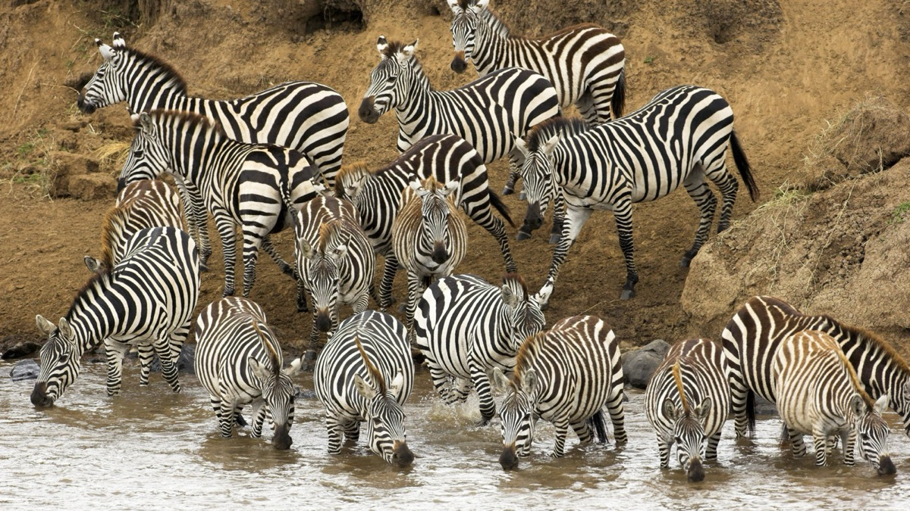

În pijamale
Zebrele în pijamale
Au sosit la scăldătoare
Sunt numai ochi și urechi
Tot timpul perechi perechi
Beau la apă și se scaldă
Și pot fi oricând o pradă
Deodată o iau la fugă
Leii vor să le ajungă
Dar în calea lor de-odată
Elefanții se arată
Și fac zid de apărare
Stând leilor în cale.
Vasile Groza
Apare și în: Poezii cu animale.